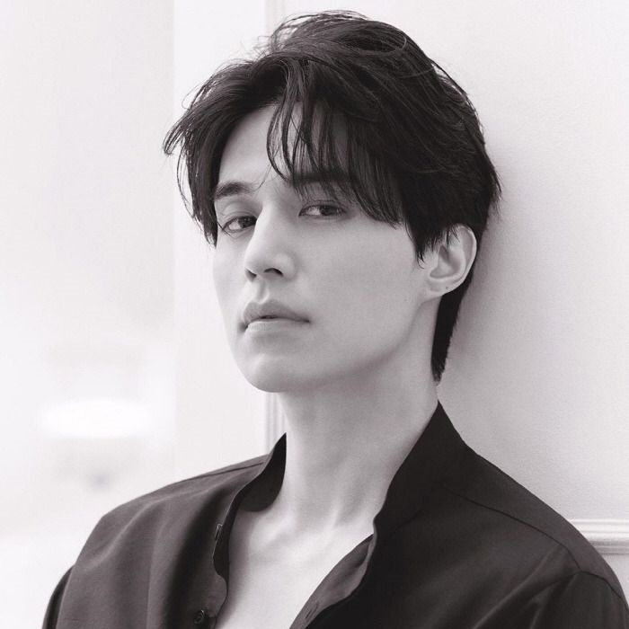

1.Lee Jong-Suk

2.Lee Dong-Wook
3.Song Joong-Ki

A onda de popularidade dos doramas coreanos trouxe à tona uma série de atores que não só conquistaram os corações dos fãs por suas atuações talentosas, mas também por sua impressionante beleza. Estes astros são admirados tanto por sua presença carismática nas telas quanto por sua estética impecável, que se alinha perfeitamente aos elevados padrões de beleza da indústria do entretenimento sul-coreana. Muitos deles ganharam reconhecimento internacional, não apenas em dramas, mas também em campanhas de moda e como embaixadores de grandes marcas globais. Além de seus rostos perfeitos e habilidades de atuação, esses atores são conhecidos por sua dedicação a projetos filantrópicos e sua capacidade de influenciar positivamente as tendências de moda e beleza em todo o mundo. Seu sucesso demonstra como a indústria do entretenimento coreano tem moldado padrões globais de beleza e carisma.